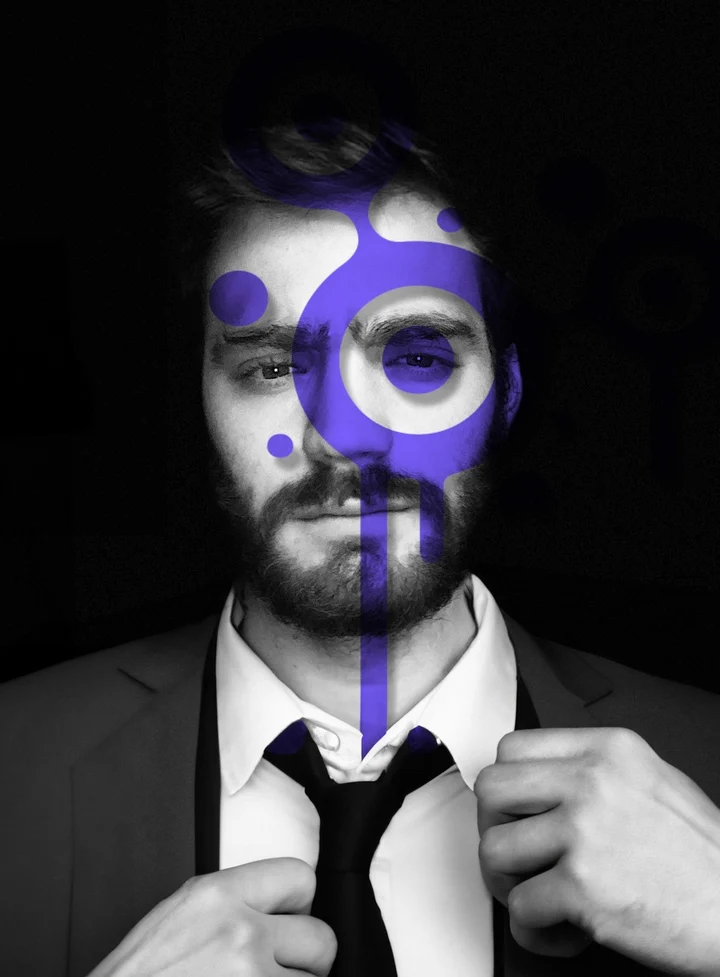

"Ogni attività ha qualcosa di unico. Il mio lavoro è trovarlo e farlo diventare il motivo per cui i clienti scelgono te."
- Social Media Manager di 20+ attività
- CMO di 2 startup
- Nel mondo social da 10+ anni, verticale sul marketing organico
L'agenzia social per chi vuole numeri, non like
Contenuti scritti da persone e girati dal vivo con te. Crescita 100% organica: niente pubblico comprato, solo persone che si ricordano di te — e ti scelgono.
Abbiamo lavorato con:
Videomaker per:
Ogni giorno migliaia di persone scoprono nuove attività scorrendo un feed. La differenza tra chi cresce e chi resta invisibile non è la fortuna: è avere qualcuno che racconta la tua storia nel modo giusto, alle persone giuste, ogni singolo giorno.
La maggior parte delle attività non ha un problema di social. Ha un problema di metodo. Vedi se ti ritrovi:
Nessuno ti ha ancora costruito una presenza pensata per il tuo business: contenuti scritti da persone che parlano la lingua dei social, girati dal vivo insieme a te, e una crescita organica che ti fa ricordare — non solo vedere. È esattamente quello che facciamo noi.
Scopri quanto può crescere la tua attivitàPrima di pubblicare qualsiasi cosa, servono tre consapevolezze. È da qui che parte ogni risultato vero.
I social non aggiustano un business: lo amplificano. Se l'offerta funziona, la moltiplicano; se qualcosa si inceppa — prezzi, servizio, margini — lo mostrano a tutti. Troppo spesso si dà la colpa a Instagram quando i conti non tornano. Il primo passo non è pubblicare: è capire, con onestà, se i social sono la leva giusta per te adesso.
Richiedi un'analisi della tua attivitàLa maggior parte delle persone non pubblica per paura: paura del giudizio, di non essere all'altezza, della classica sindrome dell'impostore. Eppure ogni volta che un nostro cliente ha superato quel blocco e ha iniziato a metterci la faccia davanti alla telecamera — con la nostra guida — i risultati si sono moltiplicati. Il tuo potenziale non è nei follower che non hai: è nella storia che ancora non stai raccontando.
Scopri quanto può crescere la tua attivitàOgni giorno online senza una direzione è tempo, budget e reputazione che se ne vanno. Un profilo curato male comunica più di uno assente: dice "non ci tengo". In una call gratuita mettiamo a fuoco cosa ti serve davvero — e cosa no — così ogni euro e ogni ora vanno esattamente dove contano.
Prenota una call gratuitaNon ti serve "essere sui social". Ti serve che i social ti portino clienti. Ecco tutto quello che mettiamo in campo per farlo. Base a Roma, clienti in tutta Italia.
Prendiamo in mano i tuoi profili e li facciamo lavorare per te, ogni giorno.
Shooting dal vivo, reels ed editing con un occhio formato tra cinema e reti televisive.
Prima di pubblicare qualsiasi cosa, capiamo chi sei, chi devi raggiungere e perché dovrebbero scegliere te.
Il social porta l'attenzione, il sito la trasforma in business. Progettiamo entrambi perché lavorino insieme.
Dal ridisegno del logo alle regole del brand: ecco alcuni progetti realizzati da Organiq.


Un sistema coordinato per materiali aziendali, sito e social. Esplora le applicazioni e il manuale completo.
LT Motori · Brandbook V1 · PDF, 14 pagine.
Nessuna improvvisazione: un percorso chiaro, dallo studio dei dati alla crescita misurabile.
Studiamo il tuo mercato, i tuoi competitor e i tuoi canali attuali. Prima i dati, poi le idee: nessuna strategia fotocopia, perché la tua attività non è la fotocopia di nessuna.
Posizionamento, piattaforme giuste e piano editoriale su misura. Ogni contenuto ha un compito preciso: farti trovare, farti ricordare, farti scegliere.
Non ti mandiamo istruzioni: veniamo noi, con una macchina e un'idea. Foto, video e reels scritti da persone e girati faccia a faccia — il contatto umano si vede, anche dietro uno schermo.
Zero pubblico comprato, zero scorciatoie: solo crescita organica che resta. Ogni mese un report chiaro con dati pubblici e verificabili. I numeri non mentono.
Follower e visualizzazioni sono dati pubblici: puoi controllarli direttamente sui profili. La fiducia si costruisce con le prove, non con le promesse.
Leone Master School — 2,9 milioni di visualizzazioni negli ultimi 30 giorni.
Leonardo Leone — un imprenditore trasformato in canale di autorevolezza e acquisizione.
Cosplus3D — 42.000 follower costruiti con contenuti riconoscibili.
Out Of Mana — un singolo reel da 7,1 milioni di visualizzazioni organiche.
Prima pubblicavo a caso e non cambiava niente. In tre mesi il profilo è diventato il mio primo canale di prenotazioni.
Lo shooting dal vivo cambia tutto: i video sembrano veri perché lo sono. I clienti me li citano in negozio.
Numeri chiari, verificabili, senza fumo. Capisco esattamente cosa sta funzionando e perché.
Pensavo che i social non facessero per la mia attività. Mi hanno fatto ricredere con i fatti, non con le parole.
Con altre agenzie i follower salivano e le vendite no. Qui è il contrario: la community è piccola ma compra.
Piano editoriale, riprese, pubblicazione, report: non devo pensare a niente. Io lavoro, loro raccontano.
Al primo incontro mi hanno sconsigliato di investire su una piattaforma che non mi serviva. Lì ho capito che erano onesti.
Un solo reel girato con loro ha portato più richieste di un anno di post fatti da me. Non è magia, è mestiere.
Dietro ogni contenuto ci sono due persone vere: la strategia che decide dove andare e l'occhio creativo che lo trasforma in immagini.
"Ogni attività ha qualcosa di unico. Il mio lavoro è trovarlo e farlo diventare il motivo per cui i clienti scelgono te."

"Credo che ogni storia meriti di essere raccontata nel modo più professionale possibile, attraverso immagini che emozionano."
Analisi gratuita e senza impegno: guardiamo la tua situazione reale e ti rispondiamo entro 24-48 ore con un quadro concreto. Risponde una persona vera.
Misuralo adesso: 8 domande, 2 minuti, risultato immediato. E se i social non sono la tua priorità, te lo diciamo onestamente.